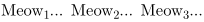

Syntax (autogenerated)
| \dorecurse{...}{...} | |
| {...} | number |
| {...} | command |
Syntax
| \dorecurse{n}{commands} | |
| {n} | The number of times to repeat the commands |
| {commands} | Commands or text to repeat |
Description
Repeat something a number of times.
Example
-
\dorecurse{3}{Meow\low{\recurselevel}... }
- 
See also
- ConTeXt and Lua programming/Tutorials/System Macros/Loops and Recursion
-
Looping a fixed number of times
- \dorecurse for iterating from 1 to n.
- \dostepwiserecurse for iteration with arbitrary start, end, and step.
- \recurselevel for the iteration number.
- \recursedepth for the iteration depth, in the case of nested \dorecurse and co.
-
'While' loops with exit conditions
- \doloop for a loop that repeats until exited.
- \exitloop to exit a loop.
- \exitloopnow to immediately exit a loop.
- \recurselevel to know which iteration the loop is in.
- \recursedepth to know how many nested loops deep we are.
- \input is also often used to produce dummy text.
- LuaTeX for heavier-duty looping and iterating.
- \definecounter to define custom numeric counters.
Help from ConTeXt-Mailinglist/Forum
All issues with: